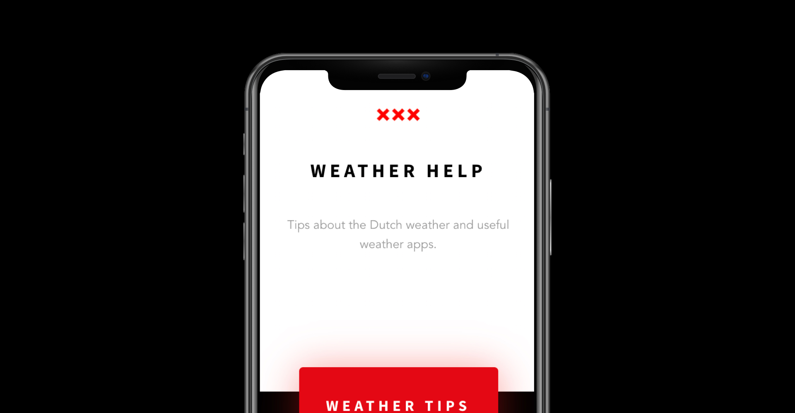

Case info
ISGA (International student guide Amsterdam), was our first project at CMD. At the moment the international students only get a physical guide, but nothing online or digital. For us the task to create a HTML webapp mobile prototype that these students can use when they arrive in the Netherlands. You could choose one topic or make one of your own and it had to be something that they could really use for their time in the Netherlands and Amsterdam. As for the design language we had to keep the style ISGA uses at the moment.
Role(s)
HTML/CSS Prototype, Visual design, desk & field research.
Approach
After watching a few interviews and doing some basic research I found out that the weather would be a great topic to build the webapp around. the dutch weather can change every minute, it could be 20 degrees and then few minutes later it could be raining pretty hard. Most of these students come from climates that don't change that often, that's why I went and created a weather help app for them.
This webapp will help you with some tips for the different seasons and give you some good weather apps for you to use in the Netherlands. Also some dutch weather apps to practice your dutch if they feel like it!